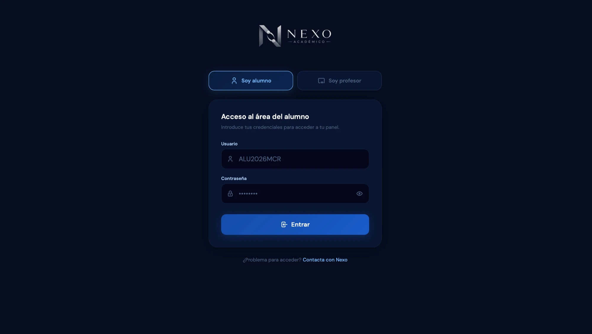

1
Primer accesoEntra en tu área personal
El equipo de Nexo Académico te entregará un usuario y una contraseña. Con esos datos accedes cada vez a tu panel, disponible tanto desde el ordenador como desde el móvil.

Pantalla de acceso — pestaña «Soy alumno»
- 1Selecciona siempre la pestaña «Soy alumno» (la de «Soy profesor» es para tus profesores).
- 2Introduce el usuario y la contraseña que te ha facilitado Nexo Académico.
- 3Pulsa Entrar y accederás directamente a tu panel de Inicio.
- 4¿Problemas para entrar? Usa el enlace «Contacta con Nexo» al pie de la pantalla.